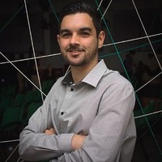

Winicius Morais
Resumo de Qualificações
Profissional graduado em Engenharia Mecânica, o pontapé inicial foi dado através de um curso realizado na escola
SENAI -
Aprendizagem em Mecânica Geral. Posteriormente ingressou na área técnica também em outro curso realizado na
escola
SENAI – Técnico em Mecânica de Precisão, até chegar ao curso de Engenharia Mecânica pela Universidade Anhembi
Morumbi
com bolsa Integral 100%. Atualmente em transição de carreira para área de Tecnologia da Informação, estudando na
Generation – Brasil, curso de Desenvolvedor Júnior.
Perfil
Formação Acadêmica
- Desenvolvedor Júnior
Programa Generation 2019-1
Escola Digital House
- Engenharia Mecânica
Bolsa Integral - Prouni
UAM - Universidade Anhembi Morumbi
Experiência Profissional
Aceco TI 2017 - 2018
Estagiário de Engenharia (Projetos)
- Auxílio no desenvolvimento de projetos de climatização para salas cofre e data centers, utilizando
softwares
de modelamento 3D e 2D; Autodesk Revit e 2D Auto CAD.
- Levantamentos detalhados de instalações existentes para desenvolvimento de projetos de sala cofre.
- Auxílio no desenvolvimento de memoriais descritivos, memoriais de cálculo, fluxogramas, planilhas de
cálculos
técnicos.
- Acompanhamento e auxilio aos departamentos de orçamento, compras e obras.
- Comunicação com diferentes disciplinas para compatibilização de projetos, e desenvolvimento de melhoria
contínua
no processo de projeto.